Репетиция разметки болтов (20 шт.)
Этап 1: авто-поворот по PCA, выравнивание длинной оси горизонтально, головка слева. Этап 2: эвристическое выделение конструктивных элементов по профилю ширины.
art-10105-bolt-s-flantsem [flange] угол -0.6°
Головка Подголовник Гладкая часть Резьбовая часть Фаска (сбег)
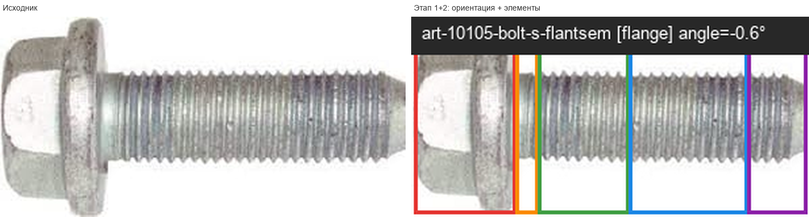
art-88928-bolt-s-t-obraznoy-golovkoy-dlya-profilya [tbolt] угол -38.4°
Головка Подголовник Резьбовая часть Фаска (сбег)
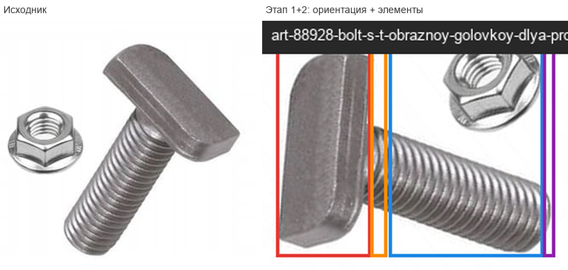
art-88933-bolt-so-stopornym-burtom [hex] угол -83.8°
Головка Подголовник Гладкая часть Резьбовая часть Фаска (сбег)
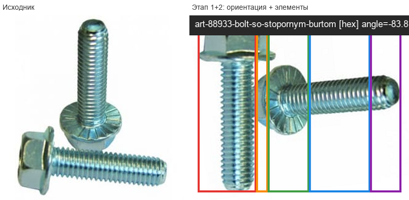
din-15237-bolt-noriynyy [elevator] угол 46.9°
Головка Подголовник Гладкая часть Резьбовая часть Фаска (сбег)
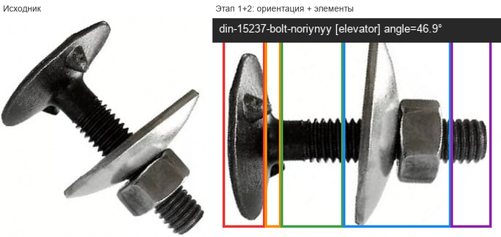
din-444-bolt-otkidnoy [swing] угол 19.9°
Головка Подголовник Гладкая часть Резьбовая часть Фаска (сбег)
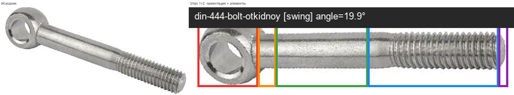
din-529-bolty-ankernye [anchor] угол 48.6°
Головка Подголовник Резьбовая часть Фаска (сбег)
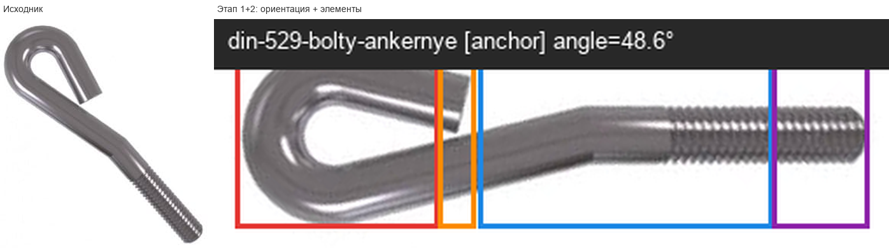
din-580-rym-bolt [eye] угол -89.3°
Головка Подголовник Гладкая часть Резьбовая часть Фаска (сбег)
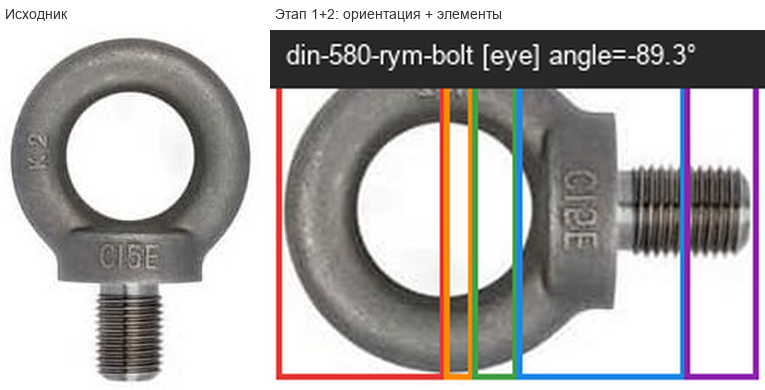
din-603-bolt-mebelnyy-s-polukrugloy-golovkoy [carriage] угол 0.0°
Головка Подголовник Гладкая часть Резьбовая часть Фаска (сбег)
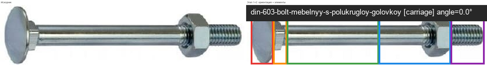
din-604-bolt-s-potaynoy-golovkoy-i-usom [countersunk] угол 2.3°
Головка Подголовник Гладкая часть Резьбовая часть Фаска (сбег)
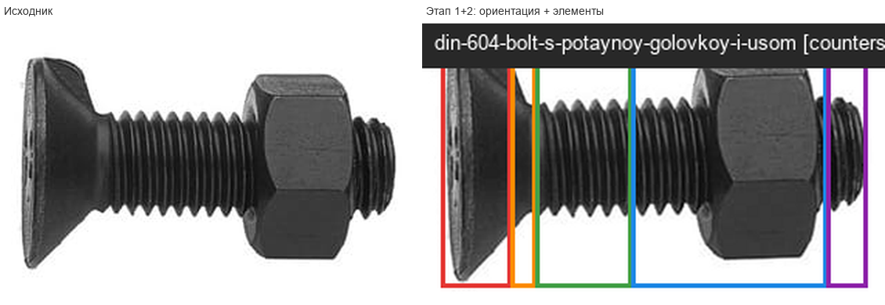
din-609-bolt-prizonnyy [fitting] угол -7.4°
Головка Подголовник Гладкая часть Резьбовая часть Фаска (сбег)
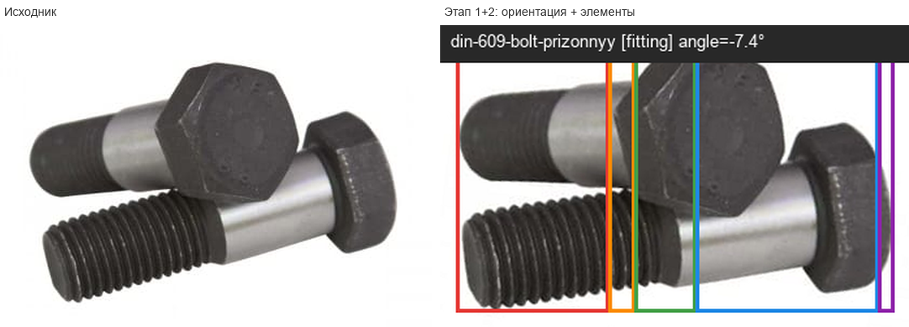
art-88912-bolt-s-flantsem-s-nasechkami [flange] угол 34.6°
Головка Подголовник Гладкая часть Резьбовая часть Фаска (сбег)
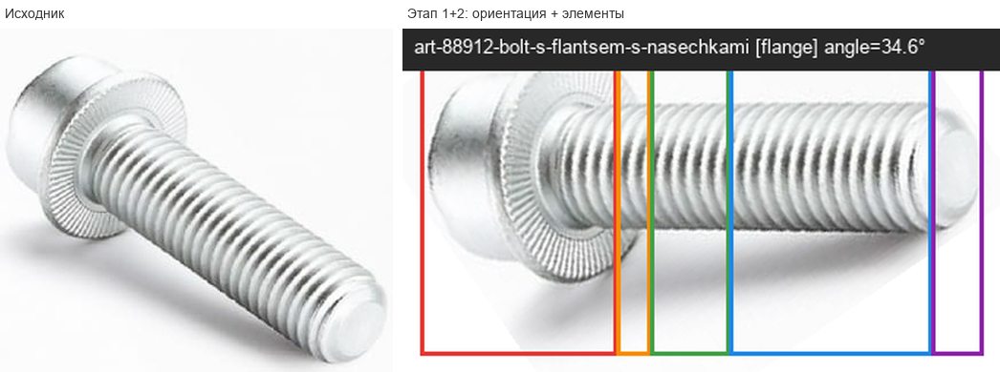
art-88940-bolt-halfen-dlya-profilya [tbolt] угол 0.0°
Головка Подголовник Резьбовая часть Фаска (сбег)
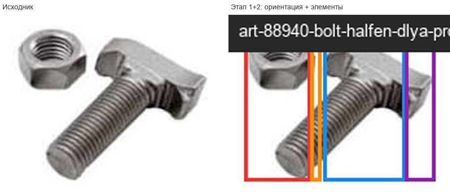
din-22424-bolt-s-trehgrannoy-golovkoy-i-burtikom [hex] угол -48.4°
Головка Подголовник Гладкая часть Резьбовая часть Фаска (сбег)
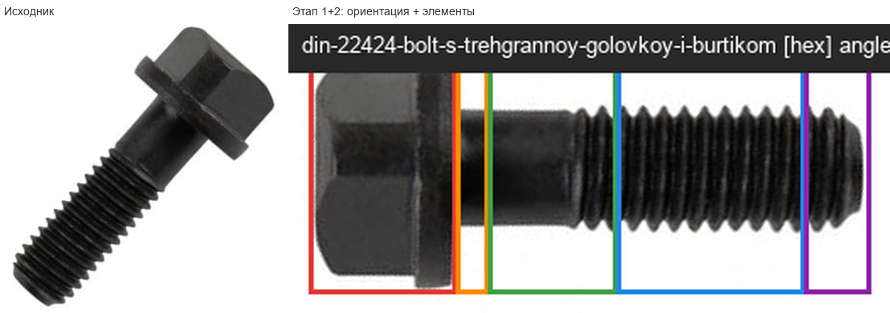
gost-3033-79-bolty-otkidnye [swing] угол -12.4°
Головка Подголовник Гладкая часть Резьбовая часть Фаска (сбег)
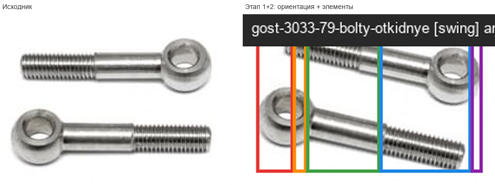
gost-24379-1-2012-bolty-fundamentnye [anchor] угол 87.1°
Головка Подголовник Резьбовая часть Фаска (сбег)
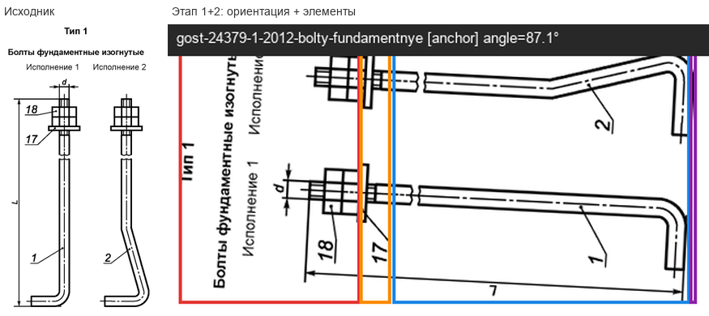
din-607-bolt-mebelnyy-s-usom [carriage] угол 47.1°
Головка Подголовник Гладкая часть Резьбовая часть Фаска (сбег)
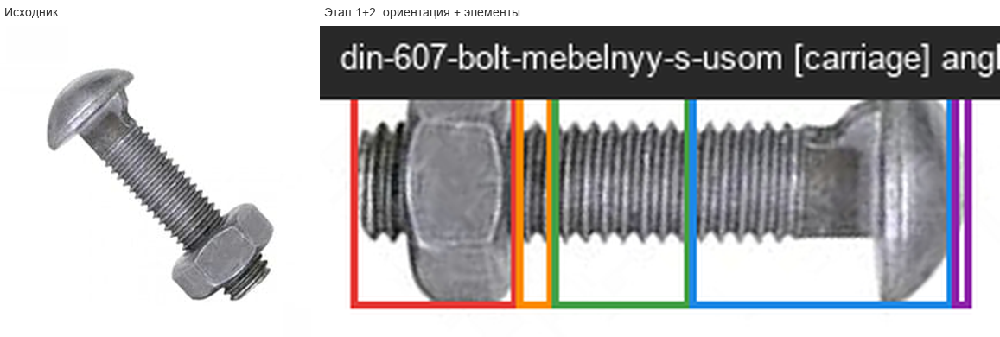
din-605-bolt-s-potaynoy-golovkoy-i-kvadratnym-podgolovkom [countersunk] угол -0.7°
Головка Подголовник Гладкая часть Резьбовая часть Фаска (сбег)
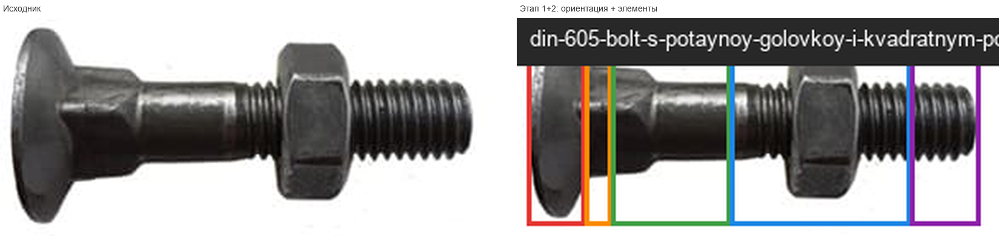
din-610-bolt-prizonnyy [fitting] угол -23.4°
Головка Подголовник Гладкая часть Резьбовая часть Фаска (сбег)
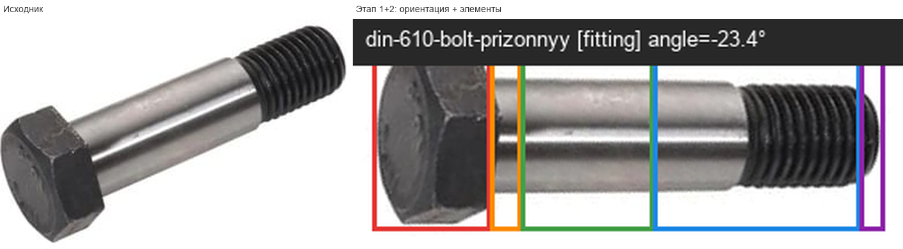
art-88913-bolt-shestigrannyy-s-flantsem [flange] угол -41.3°
Головка Подголовник Гладкая часть Резьбовая часть Фаска (сбег)
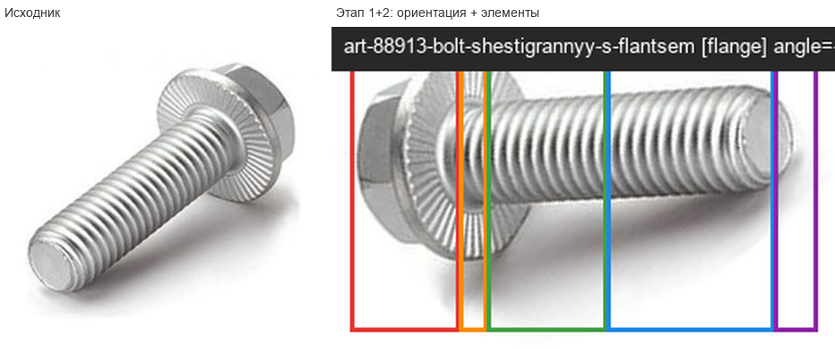
art-88950-bolt-halfen-dlya-profilya [tbolt] угол -0.3°
Головка Подголовник Резьбовая часть Фаска (сбег)
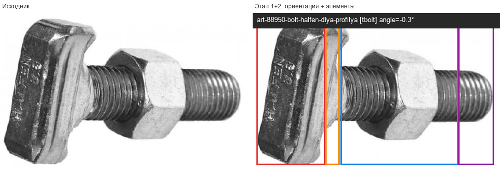